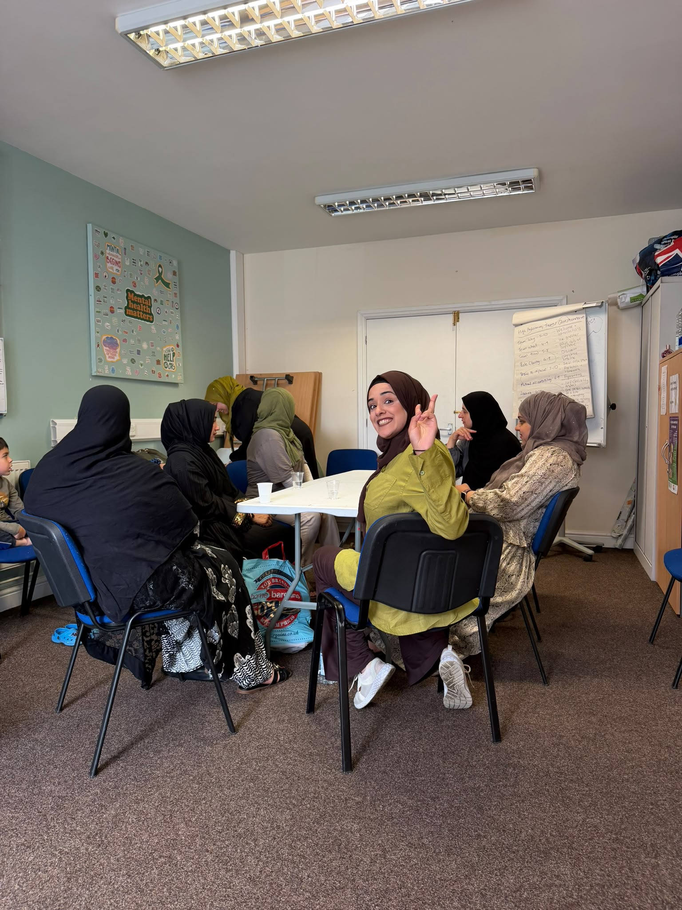
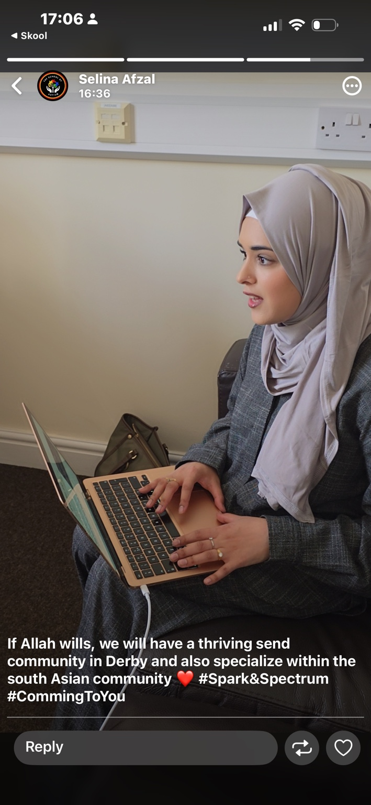
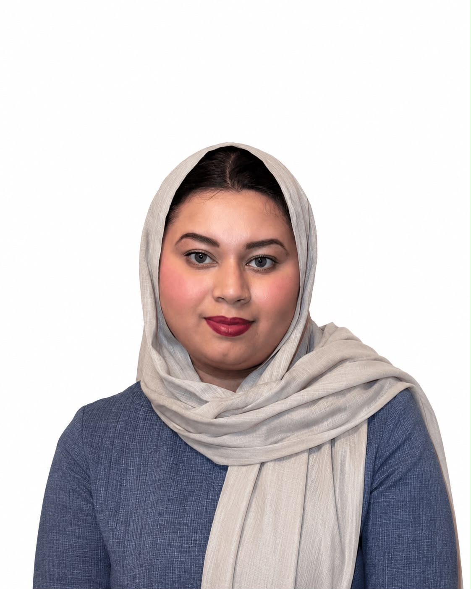
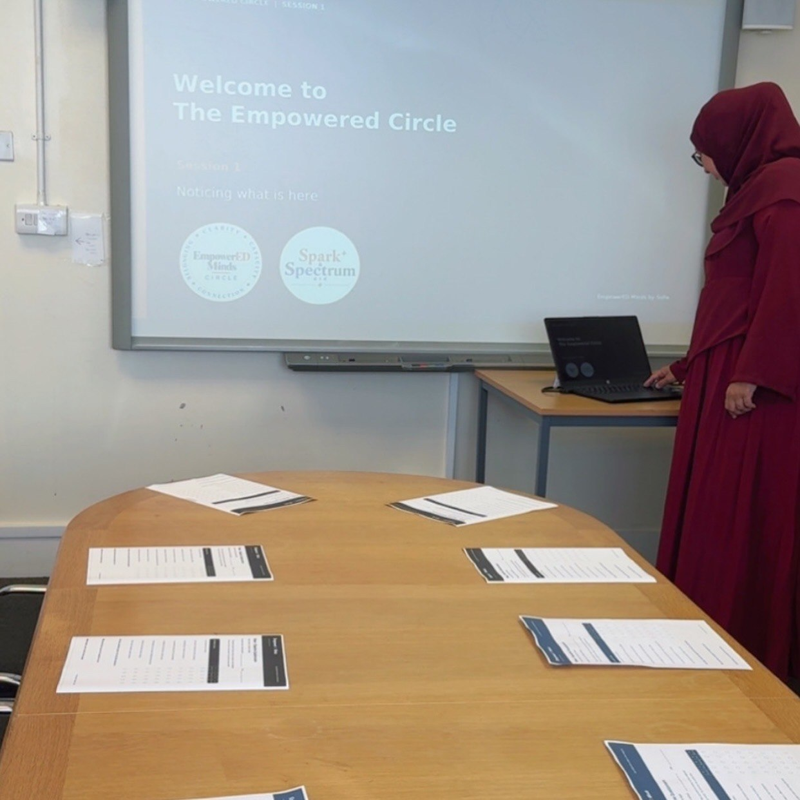
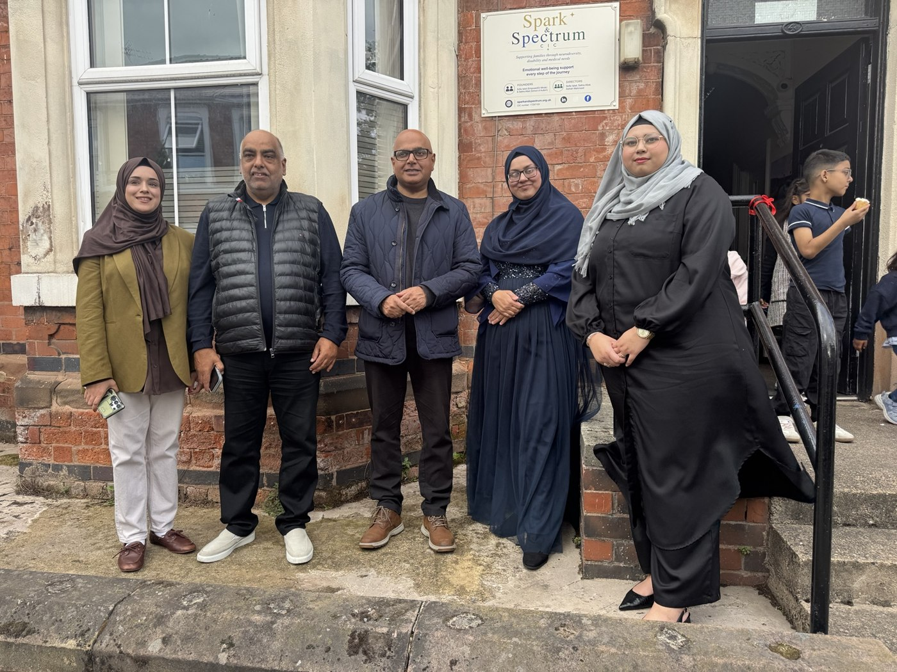
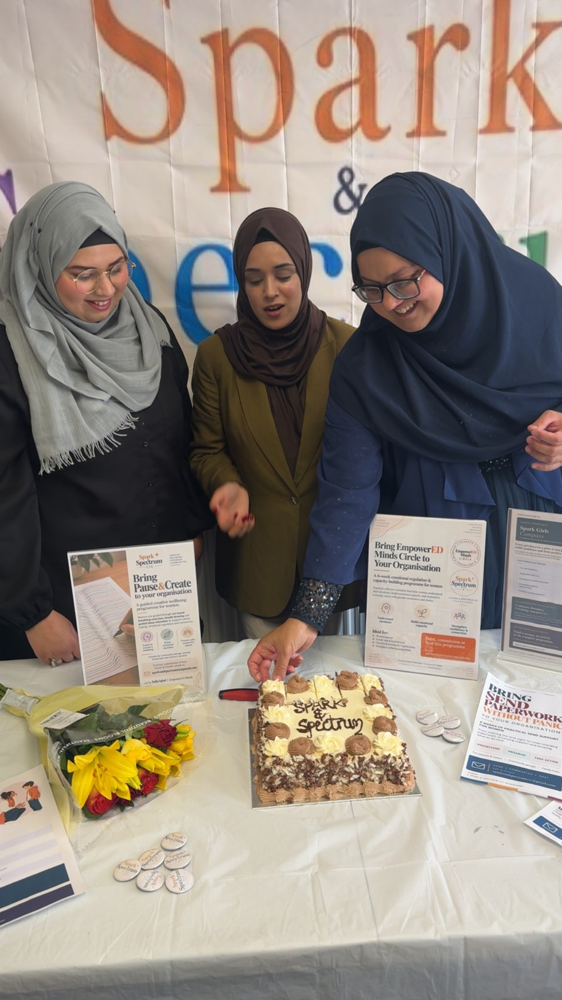
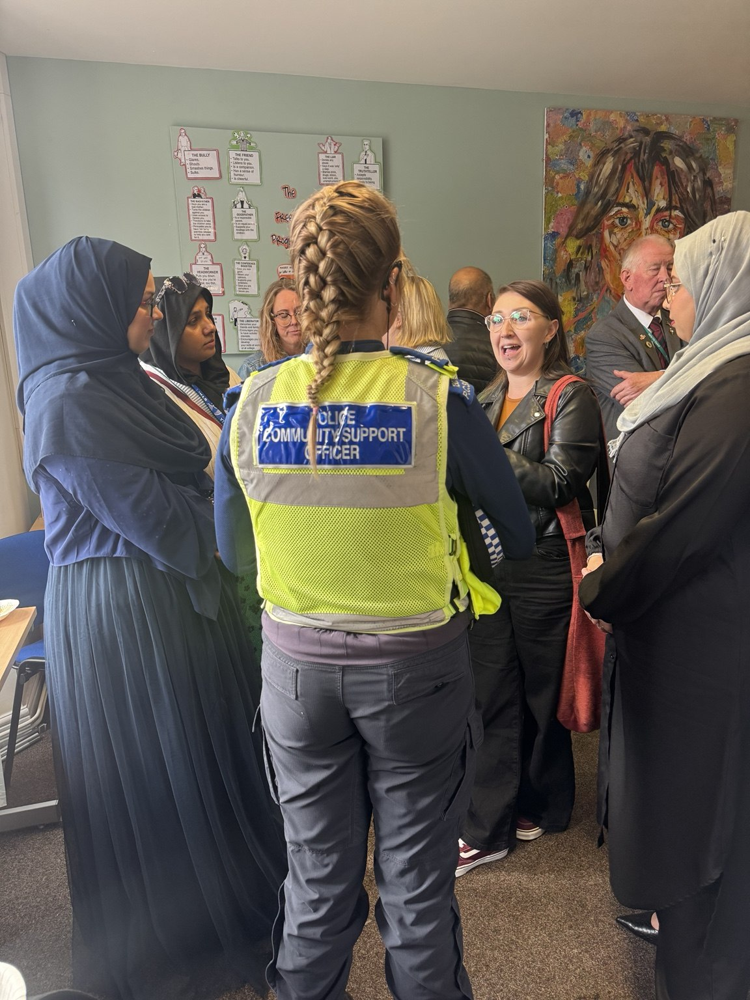
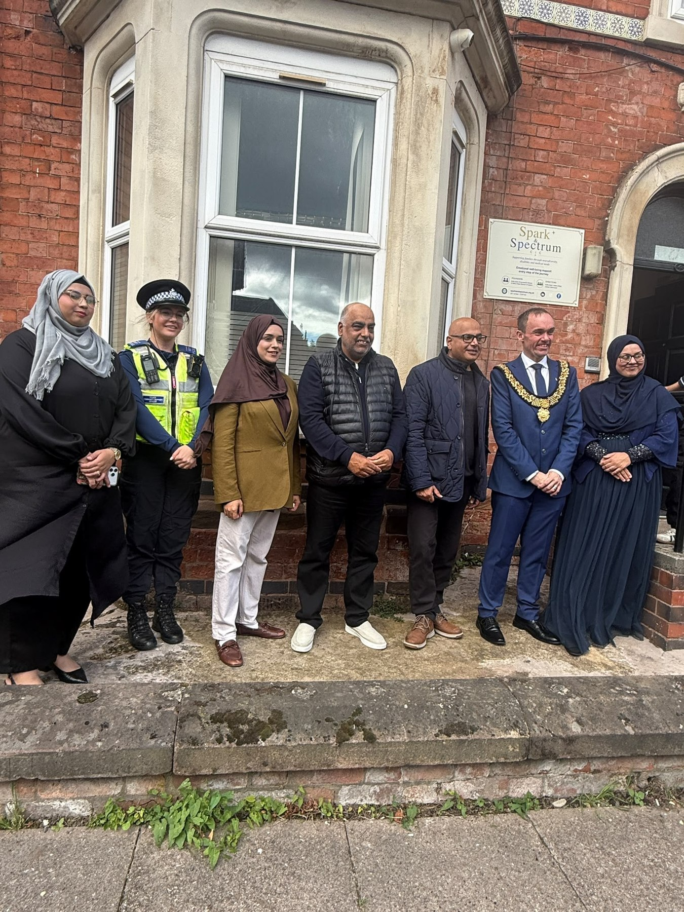
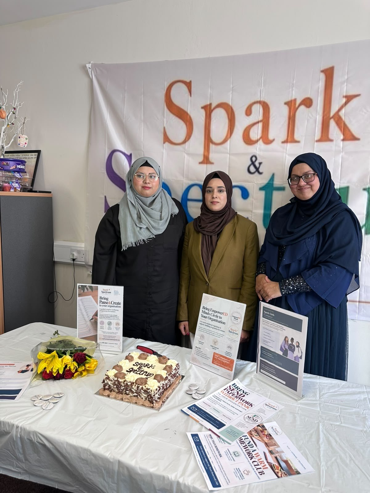

Sofia Iqbal
Co-Founder & Director
Emotional Capacity Educator, entrepreneur and community advocate with a passion for empowering families and creating change.
SPARK & SPECTRUM CIC
Practical support and welcoming spaces, shaped by lived experience.
Families navigating SEND, neurodivergence and medical needs can find themselves carrying paperwork, appointments, questions and uncertainty all at once. Spark & Spectrum CIC exists to make that journey feel clearer, more connected and less overwhelming.

Emotional Capacity Educator, entrepreneur and community advocate with a passion for empowering families and creating change.

Specialising in SEND support, documentation and family advocacy. Committed to making complex systems easier to navigate.

Supporting operations, community engagement and programme delivery to ensure families receive the help they need, when they need it.
From our opening day with the Mayor of Derby to the conversations and sessions that followed, these are some of the people and moments behind our work.





